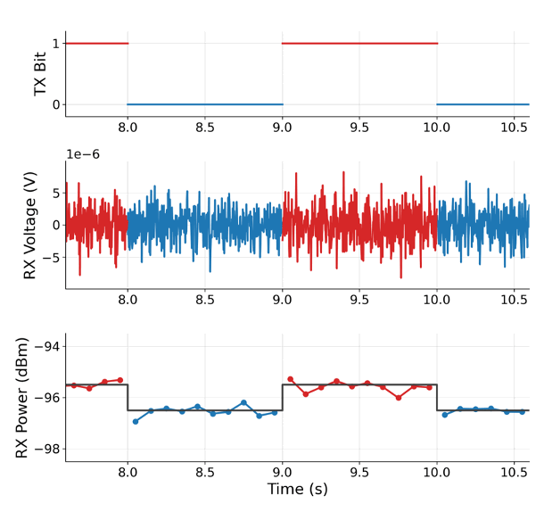
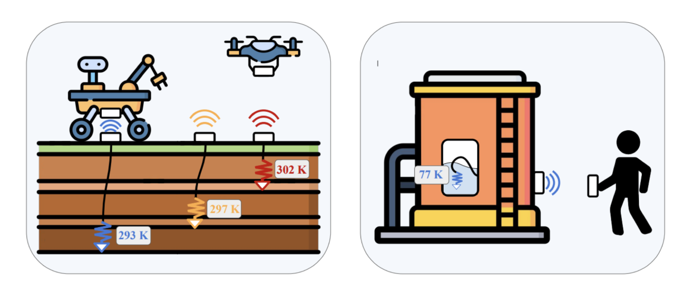
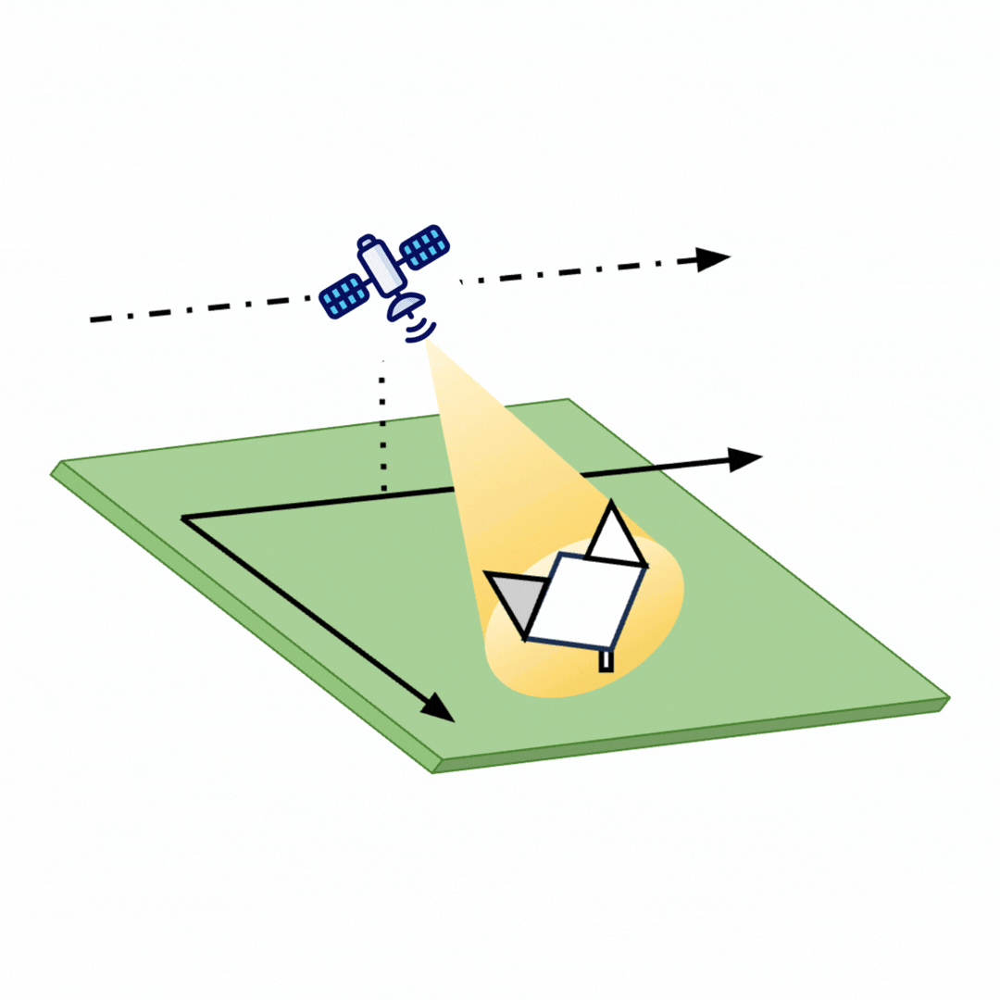
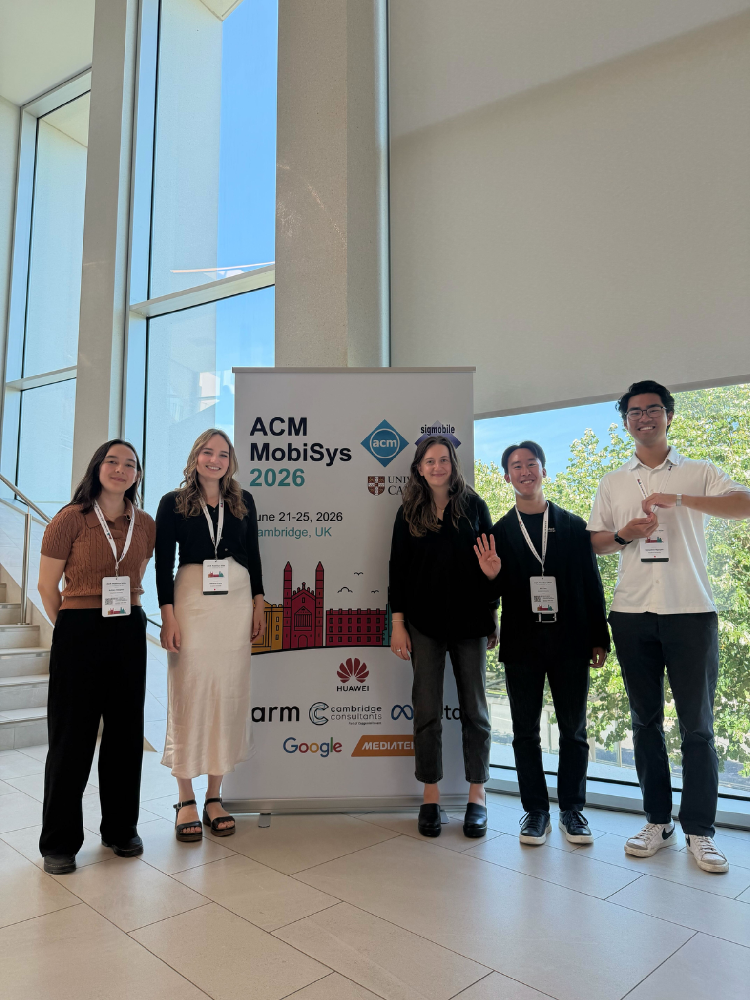
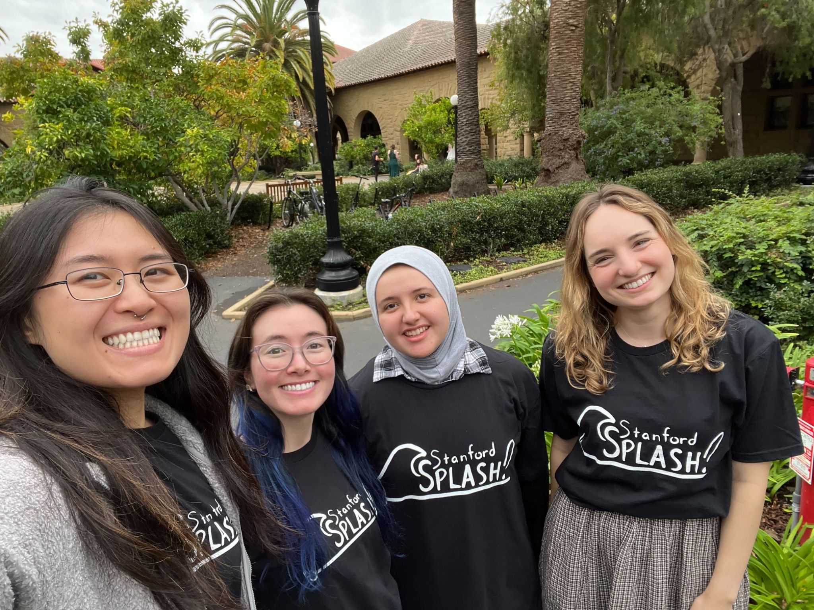

About Me
I’m a Ph.D. candidate in Electrical Engineering at Stanford University, advised by Professor Zerina Kapetanovic in the Stanford Smart Sensing Systems Lab. I build ultra-low-power wireless sensing and communication systems, with the goal of connecting devices in places where limited energy makes conventional wireless technology difficult to use.
My research explores how we can communicate using radio signals that are already around us—from satellites passing overhead to tiny amounts of naturally occurring thermal noise. I developed SARLink, which lets sensors communicate by reflecting signals from radar imaging satellites rather than generating their own radio transmissions. I also study how thermal noise can carry information, developing models and transmission techniques that help make this form of communication practical. I’m excited about what these approaches could enable for remote environmental monitoring, implantable devices, and other energy-constrained sensing applications.
I received my B.S. in Engineering from Harvey Mudd College in 2019 and my M.S. in Electrical Engineering from Stanford in 2023. Before and during graduate school, I worked on antennas and RF systems at Echodyne, Trellisware Technologies, Tesla, and Apple.
Research
Stanford Smart Sensing Systems LabDoctoral Researcher
2023 – Present

Publications
* indicates equal contribution.

First-Principles Channel Model and Capacity-Achieving Transmission Scheme in Thermal Noise Backscatter Links
A physical model and transmission scheme for communicating through thermal-noise backscatter.
Geneva Ecola*, Jida Zhang*, Joseph M. Kahn and Zerina Kapetanovic

Wireless Johnson Noise Thermometry for Passive Temperature Sensing
Passive wireless temperature sensing using Johnson noise.
Jasmin Falconer*, Geneva Ecola*, and Zerina Kapetanovic

SARLink: Satellite Backscatter Connectivity using Synthetic Aperture Radar
A sensor link that sends data by reflecting signals from radar imaging satellites.
Geneva Ecola, Bill Yen, Ana Banzer Morgado, Bodhi Priyantha, Ranveer Chandra, and Zerina Kapetanovic
Education
Stanford UniversityPh.D., Electrical Engineering
Expected 2027M.S., Electrical Engineering
2023Harvey Mudd CollegeB.S., Engineering
Departmental Honors in Engineering
2019


Professional Experience
AppleRadio Frequency Intern
Evaluated the impact of chip packaging variants on radio receiver performance and automated a testbed for optical chip-fiber alignment.
Summer 2024TeslaWireless Hardware Intern
Evaluated localization technologies for a passive entry system, including BLE and UWB. Designed and evaluated RF balun circuit matching between chip and antenna.
Summer 2023TrellisWare TechnologiesSenior Radio Frequency Engineer
Redesigned the high-frequency analog front-end of radios using simulations and tested hardware in the lab. Led hardware sustainment of a software-defined radio digital board, coordinating a team of 10+ engineers.
2019 – 2021EchodyneAntenna Intern
Measured electronically scanning array antenna near fields at multiple scan angles and frequencies, and developed MATLAB scripts to quantify antenna performance metrics.
Summer 2018


Fellowships, Honors & Awards
Fellowships
Stanford Dissertation Completion Fellowship
2026Stanford Graduate Fellowship, Rambus Corporation Fellow
2021, 2024Apple-Stanford Integrated Systems PhD Fellowship
2024
Honors & Awards
Best Presentation, ACM MobiSys Rising Star Forum
2026Best Poster Runner Up, ACM MobiSys N2Women Workshop
2026Qualcomm Innovation Fellowship Finalist
2026Stanford Emerging Environmental Scholar Research Award
2025Stanford EE315 Best Analog to Digital Converter Design
2023
Teaching
Stanford University
Course Developer · Internet of Things
Developed laboratory exercises and a final project that teach students to build connected devices using a range of wireless communication protocols.
2026Course Assistant · Circuits I
Led laboratory sections and office hours for more than 30 students in an introductory circuits course. Delivered midterm and final review lectures.
2025Course Developer and Assistant · 3D+ Imaging Sensors
Led laboratory sessions and office hours for more than 30 students on ultrasonic sensors, time-of-flight cameras, and mmWave radar. Designed a final project in which students developed a through-wall imaging system using mmWave radar.
2023
Harvey Mudd CollegeTeaching Assistant · Systems Engineering
Taught foundational concepts for laboratory experiments and guided students through system debugging and troubleshooting.
2017 – 2018
Service
Professional Service
Stanford IEEE Microwave Theory & Technology
Chair and Founder
Founded the student branch and organize technical workshops, invited talks, and networking opportunities to build a community of students interested in microwave and wireless.
2026 – PresentReviewing & Program Committees
IEEE Microwave Magazine · Reviewer (2026)
IEEE Journal of Microwaves · Reviewer (2025, 2026)
ACM MobiCom S3 Workshop · Technical Program Committee Member (2026)
ACM SenSys · Poster Program Committee Member (2025)
2025 – 2026

University Service
Stanford Women in Electrical Engineering
Vice President
Organized professional development, community-building, and networking events for an organization with more than 100 members.
2023 – 2025Stanford Electrical Engineering
Student Life and Culture Committee
Represented graduate student perspectives in departmental initiatives related to student experience, community, and culture.
2024 – 2025Stanford Women in Electrical Engineering
Outreach Chair
Organized a mentorship program for more than 50 participants and led hands-on fruit-battery demonstrations at Stanford community engagement events.
2022 – 2023
